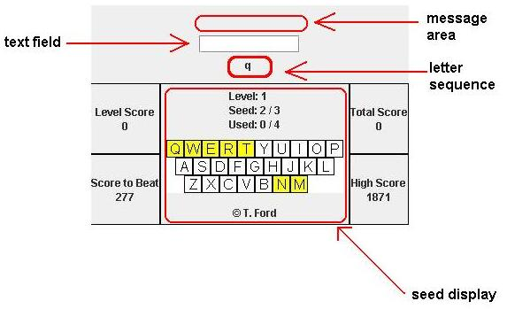
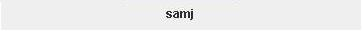
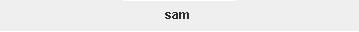
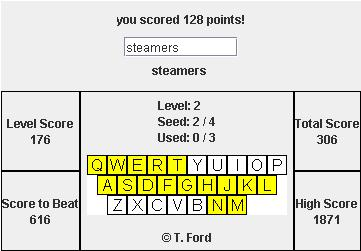
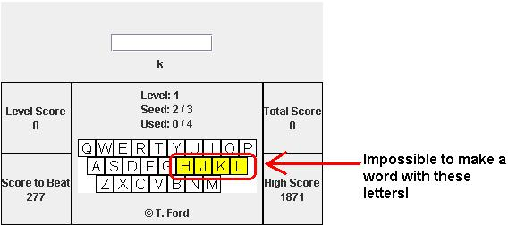
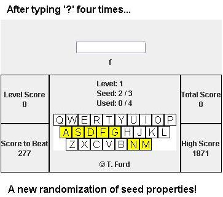

T's Typing

To play the game:
- Type the letter sequence displayed below the text field
and press space bar.
- Repeat this until the program adds a new letter to the letter sequence.
- If you "like" this sequence of letters, or think you could make a
word with it, type it, and press space bar.
If you don't like this sequence, or you don't think you
could ever make a word with it, type '?'.
- Typing the question mark will always "back you up" one letter,
that is, it will tell the program that you don't ever want to see
that letter in that sequence again.
For example, if you had the letter sequence:

and you typed '?', you would end up with

and you will never see the sequence "samj" again.
Also, if only one letter is being displayed, typing '?' will remove that letter, and replace it with a new one.
- When you get a letter sequence that you think is a word, type the word, and then type '!', and the program will try and "score" it for you. A message will appear in the message area telling you if your word was recognized or not.

- When you succesfully score points on a word, you can either keep
working with the same seed by pressing space bar,
or move to a new one by pressing the enter key.
- You'll start out with four sequence "seeds" which will cover
different areas of the keyboard. You'll have to figure out what words are
possible for a given seed based on the letters available in that area.
Understanding and visualizing the word possibilities for a given
seed is the key to getting high scores. Remember that if you get a "bad seed"
(all consonants for example) you can always keep backing up with the '?' until
the seed's properties get randomized again.


- You can "use up" a seed by making a certain number of words with it, and it will
go away. The seed display will show you what seed you are working with, how many total seeds there are, how many words you have made with that seed so far, and how many words it takes to use up that seed. When all your seeds go away, you may be eligible to go up
a level. Your level score will then be compared with
that level's "score to beat." If you beat the required score, your
level score will be added to your total score, and you will be
asked if you want to move up a level. If not, then you can quit, or
try the same level again.